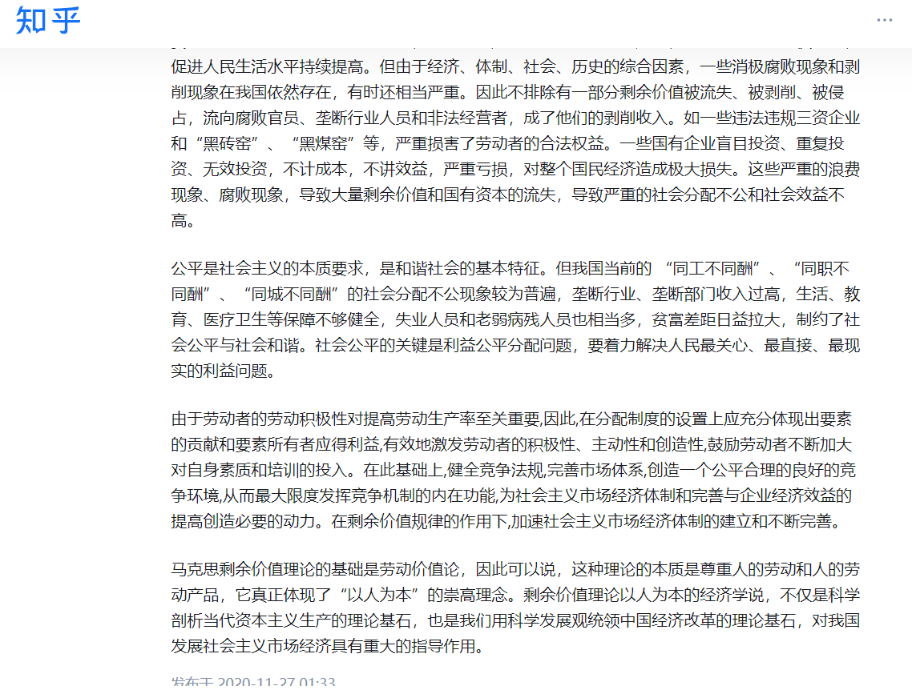
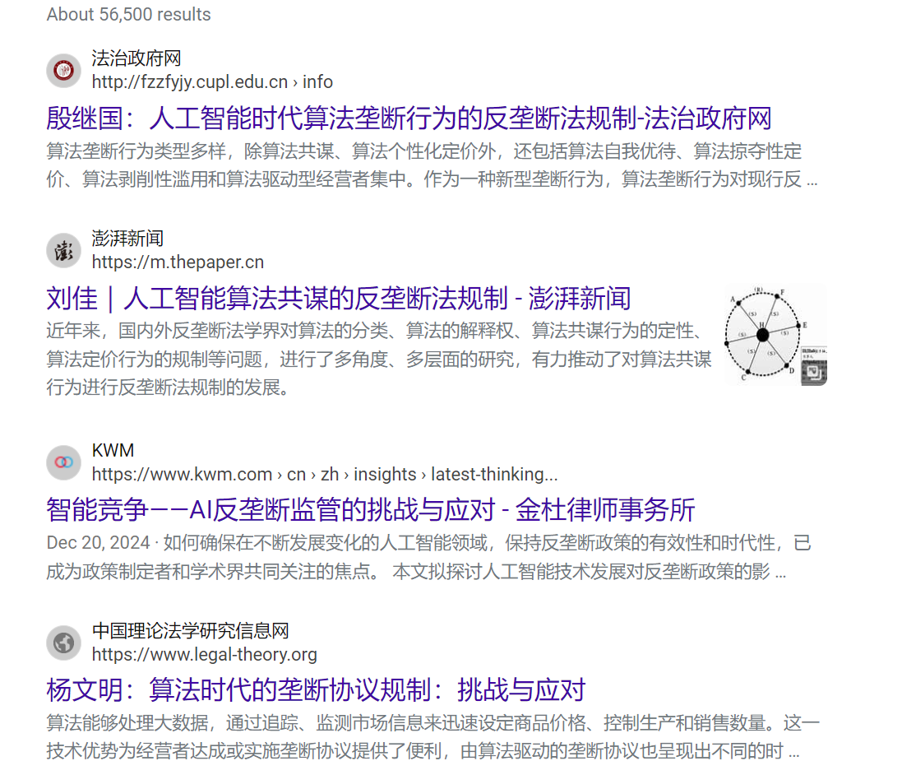

当00后用手机刷短视频时，可能很难想象马克思在19世纪伦敦图书馆奋笔疾书的场景。这个留着大胡子的德国人，真的能看懂今天的直播带货、元宇宙和人工智能吗？但有趣的是，当我们拆开数字时代光鲜的外壳，会发现马克思的"思想芯片"仍在持续运转。
| 国家/地区 | 应用领域 | 具体实践 | 数字时代特征 |
|---|---|---|---|
| 中国 | 经济改革 | 社会主义市场经济体制 | 电商平台监管、数字人民币 |
| 北欧国家 | 社会福利 | 高福利社会模式 | 全民数字医疗保障系统 |
| 欧盟 | 数字经济 | 数字税改革 | 应对科技巨头垄断 |
当00后用手机刷短视频时，可能很难想象马克思在19世纪伦敦图书馆奋笔疾书的场景。这个留着大胡子的德国人，真的能看懂今天的直播带货、元宇宙和人工智能吗？但有趣的是，当我们拆开数字时代光鲜的外壳，会发现马克思的"思想芯片"仍在持续运转。
马克思像程序员一样解剖了人类社会的底层代码...
当我们在拼多多抢购时，他提出的"商品拜物教"正在屏幕后偷笑；当硅谷码农抗议996，他笔下的"剩余价值"概念突然在21世纪复活...
马克思的"商品拜物教"揭示了商品在资本主义社会中的神秘化现象，即商品的价值被赋予了某种超自然的属性，掩盖了其背后的社会关系。这种现象在数字时代尤为明显，例如，直播带货中的商品往往被包装成具有某种"魔力"的物品，吸引消费者购买。
"剩余价值"是马克思政治经济学的核心概念，指的是劳动者创造的价值超过其自身劳动力价值的部分，这部分价值被资本家无偿占有。在当代，996工作制正是资本家榨取剩余价值的现代版本。
 了解更多马克思主义不是刻在石碑上的死文字，而是开源的代码库...
中国乡村振兴中"共同富裕"的探索，欧洲左翼政党对数字税的改革倡议...
当气候危机撕开资本主义的环境账单...
马克思主义就像预装在全人类操作系统里的杀毒软件...
气候危机是资本主义无限增殖逻辑的直接后果。资本追求利润最大化的本性导致了对自然资源的过度开发和环境破坏。马克思主义提醒我们，如果不改变这种逻辑，环境危机将不可避免。
算法垄断是数字时代的新型剥削形式，大型科技公司通过算法控制市场、剥削劳动者和消费者。马克思主义的预警机制提示我们，这种垄断将导致社会不平等的进一步加剧。
站在AI黎明前的人类，需要的不是抛弃思想遗产，而是像更新显卡驱动那样升级认知工具...
马克思主义不是过时的蒸汽机，而是可以适配智能时代的量子计算机。它为我们提供了一种批判性思维工具，帮助我们在快速变化的技术环境中保持清醒，识别和解决社会问题。
只要我们保持思维的开放性，这个诞生在工业革命时期的思想体系，反而可能成为打开未来之门的密钥。
了解更多